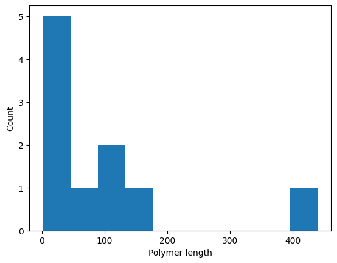
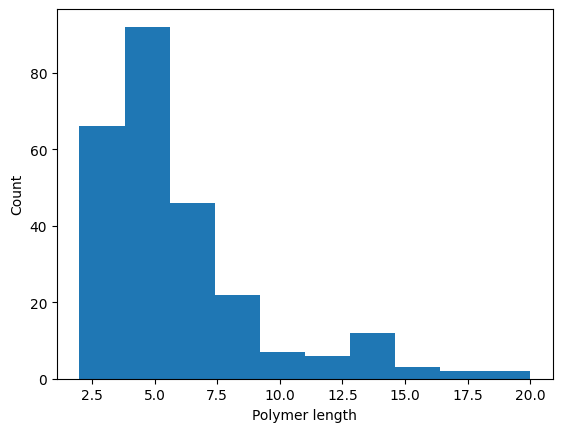

Linear polymerization¶
This example demonstrates a simple polymerization process in which monomers M can bind each other to form linear chains. There’s a lower rate of depolymerization, and chains can be terminated by capping agents C.
[2]:
from pykappa.system import System
system = System.from_ka(
"""
%init: 1000 M(l[.], r[.])
%obs: 'Free monomer' |M(l[.], r[.])|
M(r[.]), M(l[.]) -> M(r[1]), M(l[1]) @ 1 // Polymerization
M(r[1]), M(l[1]) -> M(r[.]), M(l[.]) @ 0.1 // Depolymerization
// Chain capping
M(r[.]), C(m[.]) -> M(r[1]), C(m[1]) @ 0.05
M(l[.]), C(m[.]) -> M(l[1]), C(m[1]) @ 0.05
// Cap removal
M(r[1]), C(m[1]) -> M(r[.]), C(m[.]) @ 0.01
M(l[1]), C(m[1]) -> M(l[.]), C(m[.]) @ 0.01
"""
)
Simulate for a bit:
[3]:
while system.time < 100:
system.update()
[4]:
import matplotlib.pyplot as plt
def polymer_len_plot(system):
plt.hist([len(component) for component in system.mixture if len(component) > 1])
plt.xlabel("Polymer length")
plt.ylabel("Count");
print(f"Free monomers: {system['Free monomer']}")
polymer_len_plot(system)
Free monomers: 0

Now let’s add some of the capping agent:
[5]:
system.mixture.instantiate("C(m[.])", 500)
while system.time < 200:
system.update()
print(f"Free monomers: {system['Free monomer']}")
polymer_len_plot(system)
Free monomers: 1
